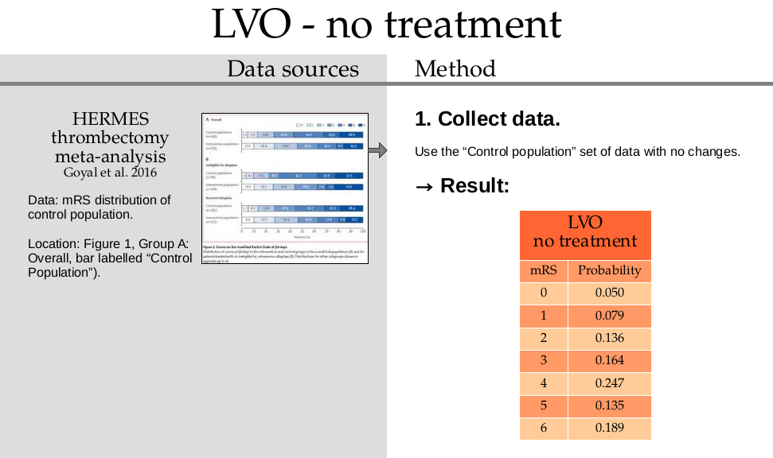
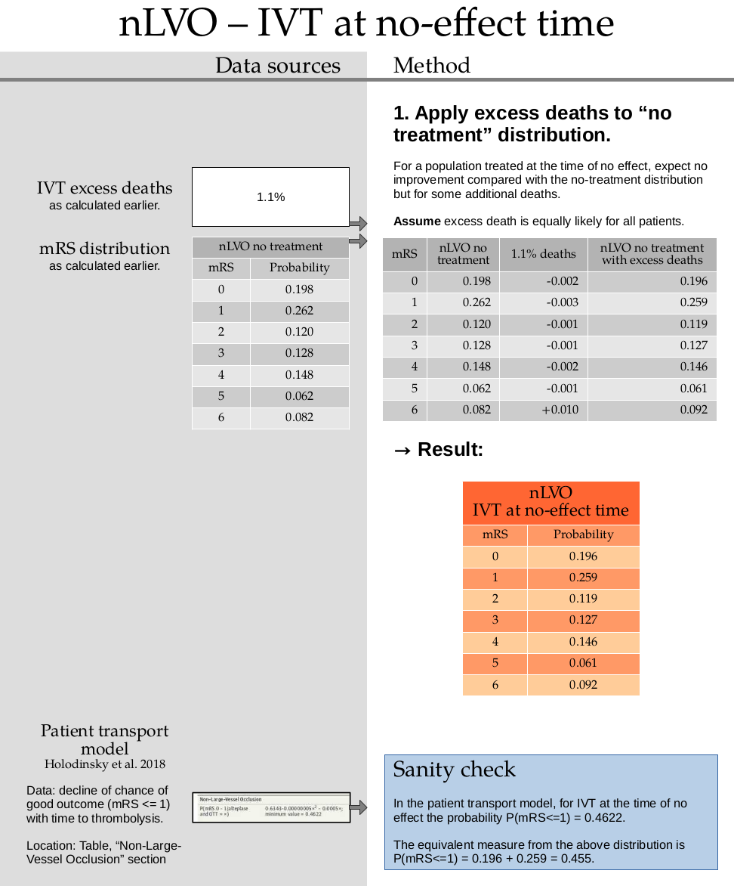
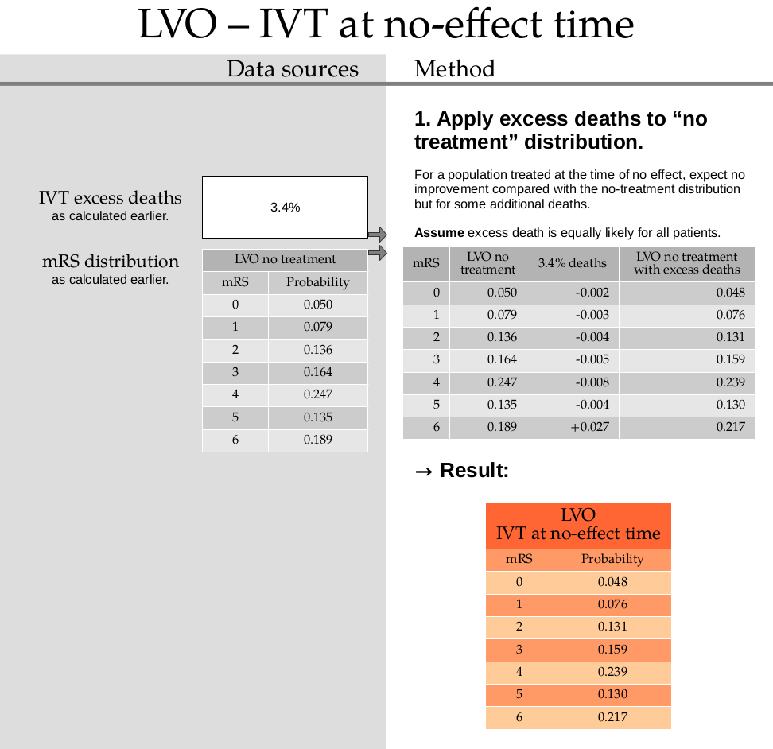
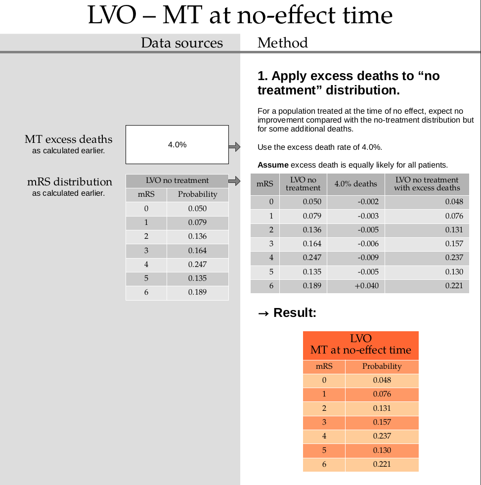
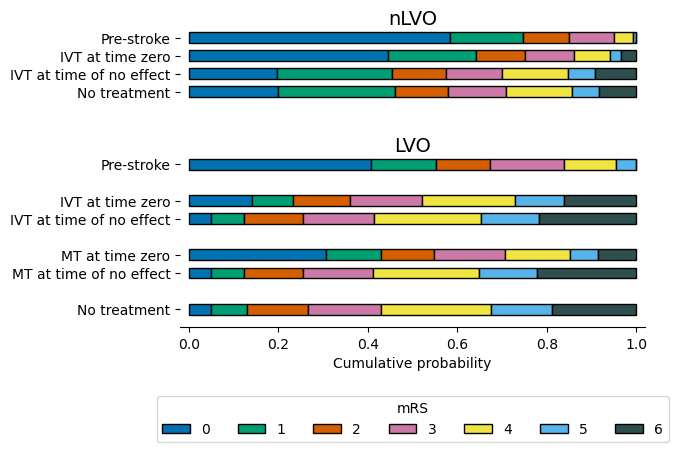

Derivation of mRS distributions from reference data#
This document calculates the modified Rankin Scale (mRS) distributions used in the stroke outcome modelling.
Plain English summary:#
When we predict the outcome of a person who has had a stroke, we want to be able to say what is the likely improvement in disability level they would experience due to the treatment.
The modified Rankin Scale is used to assign a level of disability to a patient who has had a stroke. When looking at the mRS scores of a whole population, some scores are more likely to occur than others depending on who is included in that population. The improvement in disability level they can get will depend on the time from when their stroke symptoms began and when they receive treatment. The best possible outcome would be if they were treated immediately after they had their stroke. The benefit of treatment reduces over time until the treatment no longer offers any benefit, and they will not be better off than having no treatment. We can look at the proportion of people with each mRS score as the probability of having that mRS score.
The main aim of the stroke outcome model is to be able to predict the range of mRS scores of various different populations. We would like to know the expected mRS scores of groups of people before a stroke, people who received no treatment for their stroke, and people who were treated at any chosen time after their stroke began. There is no real-life data for this last group of people. However we can create a model that creates that data by combining other real-life datasets. The real-life datasets come from various clinical trials.
We assume that the mRS scores of people after stroke depend on their time to treatment. The more time that passes between the start of the stroke and the treatment, the more likely it is that people will have higher disability scores. This continues up until a time of no effect where the patients cannot benefit from the treatment but still run the risks of death due to the treatment.
This document shows how to combine the real-life datasets to create mRS distributions that will be used everywhere in the stroke outcome model.
The final datasets will cover these three main groups of people:
Patients with a non-Large-Vessel Occlusion (nLVO) who were treated with intravenous thrombolysis (IVT).
Patients with a Large-Vessel Occlusion (LVO) who were treated with intravenous thrombolysis (IVT).
Patients with a Large-Vessel Occlusion (LVO) who were treated with mechanical thrombectomy (MT).
General method#
This document runs through the following steps in more detail.
The steps to create the mRS distributions are:
Find the mRS distributions of populations before their stroke.
These data are available in the SSNAP data.
We split the full cohort of patients into nLVO and LVO based on their NIHSS score.
Find the mRS distributions of populations that received no treatment.
This data is available for two groups. The first group is patients with LVOs. The second group is a mix of patients with nLVOs and patients with LVOs.
We combine the groups and pick out only the patients with nLVO.
Find the mRS distributions of populations that were treated after the time of no effect.
At the time of no effect, we assume that patients given the treatment will see no benefit but still run the risk of death.
We take the distributions for populations that received no treatment and adjust them for this excess death rate.
Find the mRS distributions of populations that were treated at time zero.
For IVT:
We take reference data points for mRS\(\leq\)1 at time zero and the mRS distributions at the time of no effect.
Plugging these into a formula for the changing probability of the mRS\(\leq\)1 score with time lets us find the probability distributions at time zero.
Fixing this point, we take a weighted combination of the pre-stroke and no-effect distributions so that the combination’s mRS\(\leq\)1 point matches the fixed point.
For MT:
Define the time-zero distribution as a weighted combination of 75% of the pre-stroke distribution and 25% of the no-effect distribution.
Adjust the excess death rate until the mRS distribution at a reference data time matches the mortality rate at that reference time.
The resulting mRS distributions are then saved for future use.
Summary of data sources#
The following image shows a flowchart summary of which data sources are used to create each mRS distribution.

The following summary contains the same information with the addition of the actual mRS distribution values and of several images. The images show the exact parts of each paper or data source that contain the reference data, and those images are used throughout the rest of this document.

Notebook setup#
import numpy as np
import pandas as pd
Store the derived mRS distributions in this dictionary:
mrs_dists = dict()
The following function is used to fix rounding errors. All of the derived mRS distributions will be given to 3 decimal places, but rounding the data to this from a higher precision can sometimes cause the final distribution to not sum to 1.
The basic steps of the function are:
Add together the values to 3 decimal places. The sum should be less than 1 exactly.
Look at the 4th digit of each number. Starting with the largest 4th digit, round up the three-decimal-place part to the next value.
Continue rounding up until the sum is 1 exactly.
from stroke_outcome.outcome_utilities import fudge_sum_one
1. Pre-stroke data#

Copy the values directly from the SAMueL-1 survey data:
pre_stroke_nlvo = np.array(
[0.582771, 0.163513, 0.103988, 0.101109, 0.041796, 0.006822, 0.0000])
pre_stroke_lvo = np.array(
[0.407796, 0.143538, 0.120133, 0.166050, 0.118023, 0.044460, 0.0000])
Round to 3 decimal places and force sum to be exactly 1 by nudging the smallest fractions down or the largest fractions up as required.
# Use append to make sure the mRS=6 value can't be changed.
pre_stroke_nlvo = np.append(fudge_sum_one(pre_stroke_nlvo[:-1], dp=3), 0.0)
pre_stroke_lvo = np.append(fudge_sum_one(pre_stroke_lvo[:-1], dp=3), 0.0)
Store the results in the dictionary:
mrs_dists['pre_stroke_nlvo'] = pre_stroke_nlvo
mrs_dists['pre_stroke_lvo'] = pre_stroke_lvo
Show the results here:
print(mrs_dists['pre_stroke_nlvo'])
print(mrs_dists['pre_stroke_lvo'])
[0.583 0.163 0.104 0.101 0.042 0.007 0. ]
[0.408 0.144 0.12 0.166 0.118 0.044 0. ]
2. No treatment#
LVO with no treatment#

Copy the values directly from the HERMES data and place them into the dictionary:
mrs_dists['no_treatment_lvo'] = np.array([
0.050, 0.079, 0.136, 0.164, 0.247, 0.135, 0.189])
Check that the values sum to 1:
np.sum(mrs_dists['no_treatment_lvo'])
1.0
nLVO with no treatment#
![Method for finding mRS distribution for nLVO with no treatment. 1. Collect data. The sizes of the bars are not given in the text. Measure the number of pixels in each section of each “Placebo” bar in the image. Combine the bars and scale so that they sum to 1. → Result: combined nLVO & LVO no treatment mRS distribution. 2. Find a reference probability. The proportion 727 out of 1573 is 46%. → Probability P(mRS<=1)=0.46. 3. Remove the LVO patients. To reach P(mRS<=1)=0.46 in the nLVO-only distribution, use the following weighted distributions: Scale the “nLVO & LVO” distribution up to 149%. Scale the “LVO” distribution down to 49%. Take the difference to leave only the “nLVO” patients. → Result: mRS distribution for nLVO with no treatment.](../_images/data_sources_nlvo-no-treatment.png)
1. Collect data
no_treatment_nlvo_lvo = np.array(
[0.1486, 0.2022, 0.1253, 0.1397, 0.1806, 0.0861, 0.1175])
no_treatment_nlvo_lvo = fudge_sum_one(no_treatment_nlvo_lvo, dp=3)
print(np.sum(no_treatment_nlvo_lvo), no_treatment_nlvo_lvo)
0.9999999999999999 [0.149 0.202 0.125 0.14 0.181 0.086 0.117]
2. Find a reference probability
p_mrsleq1_nlvo = 0.46
3. Remove the LVO patients
Assume that the combined nLVO and LVO mRS distribution is made up of a weighted sum of a separate nLVO and LVO distribution.
Define these probabilities for mRS <= 1:
\(P_1\) for nLVO & LVO,
\(P_2\) for LVO,
\(P_3\) for nLVO
And calculate the weight \(w\).
The nLVO probability \(P_3\) is found by:
scaling up the combined nLVO & LVO distribution to \((1 + w)\)
scaling down the LVO distribution to \(w\)
taking the difference
As a formula, this is:
Rearrange to find the weight \(w\):
# Sum the probabilities of mRS=0 and mRS=1 in the no-treatment dist:
p1 = np.sum(no_treatment_nlvo_lvo[:2]) # nLVO & LVO
# Sum the probabilities of mRS=0 and mRS=1 in the no-treatment dist:
p2 = np.sum(mrs_dists['no_treatment_lvo'][:2]) # LVO
p3 = p_mrsleq1_nlvo # nLVO
w = (p3 - p1) / (p1 - p2)
w
0.49099099099099125
Use this weight to calculate the new distribution:
no_treatment_nlvo = (
((1 + w) * no_treatment_nlvo_lvo) -
(w * mrs_dists['no_treatment_lvo'])
)
no_treatment_nlvo
array([0.19760811, 0.26239189, 0.1195991 , 0.12821622, 0.14859459,
0.06194144, 0.08164865])
Round to the same precision as the no-treatment LVO distribution:
no_treatment_nlvo = fudge_sum_one(no_treatment_nlvo, dp=3)
print(np.round(np.sum(no_treatment_nlvo), 3), no_treatment_nlvo)
1.0 [0.198 0.262 0.12 0.128 0.148 0.062 0.082]
Store this result in the dictionary:
mrs_dists['no_treatment_nlvo'] = no_treatment_nlvo
Check that the mRS <= 1 values sum to the target probability:
np.sum(mrs_dists['no_treatment_nlvo'][:2])
0.46
Are the values the same to a few decimal places?
np.isclose(np.sum(mrs_dists['no_treatment_nlvo'][:2]), p_mrsleq1_nlvo)
True
Sanity check for nLVO with no treatment#
![Sanity check for the weights of splitting nLVO and LVO patients with no treatment. The weight used is 49%. We show that another weight 48% used in the IST-3 trial is close enough to the used weight. 1. Check Lees et al 2010 data. Number of patients in total is 3670. The nLVO/LVO split is not given. 2. Check IST-3 2012 data. Number of patients in total is 3035. Of these, 1464 have nLVO (NIHSS <= 10) and 1571 have LVO (NIHSS >= 11). → 51.7...% LVO, 48.2...% nLVO. 3. Check Emberson et al. 2014 data. Number of patients in total is 6756. Of these, 3199 have nLVO (NIHSS <= 10) and 3557 have LVO (NIHSS >= 11). → 52.6…% LVO, 47.3...% nLVO. The patients in Emberson are mostly made up of: 3035 from IST-3 + 3670 from Lees et al. 2010 = 6705 patients. → Expect the same nLVO/LVO split for Lees et al. 2010 as in IST-3. 4. Compare with derived split. 51% LVO, 49% nLVO – close enough to the above.](../_images/data_sources_sanity_nlvo-lvo-split.png)
3. Treatment at the no-effect time#
nLVO treated with IVT at the no-effect time#

This step uses the excess death rate for nLVO with IVT which is calculated in this document. TO DO: ADD LINK
Calculate the excess deaths by multiplying the no-treatment distribution by 0.011. Subtract the excess deaths from the mRS 0 to 5 bins, and add them on to the mRS=6 bin.
no_effect_nlvo_ivt_deaths = np.append(
mrs_dists['no_treatment_nlvo'][:-1] * (1.0 - 0.011),
mrs_dists['no_treatment_nlvo'][-1] + np.sum(mrs_dists['no_treatment_nlvo'][:-1] * 0.011),
)
no_effect_nlvo_ivt_deaths
array([0.195822, 0.259118, 0.11868 , 0.126592, 0.146372, 0.061318,
0.092098])
no_effect_nlvo_ivt_deaths = fudge_sum_one(no_effect_nlvo_ivt_deaths, dp=3)
print(np.round(np.sum(no_effect_nlvo_ivt_deaths), 3), no_effect_nlvo_ivt_deaths)
1.0 [0.196 0.259 0.119 0.127 0.146 0.061 0.092]
Store this result in the dictionary:
mrs_dists['no_effect_nlvo_ivt_deaths'] = no_effect_nlvo_ivt_deaths
LVO treated with IVT at the no-effect time#

This step uses the excess death rate for LVO with IVT which is calculated in this document. TO DO: ADD LINK
Calculate the excess deaths by multiplying the no-treatment distribution by 0.034. Subtract the excess deaths from the mRS 0 to 5 bins, and add them on to the mRS=6 bin.
no_effect_lvo_ivt_deaths = np.append(
mrs_dists['no_treatment_lvo'][:-1] * (1.0 - 0.034),
mrs_dists['no_treatment_lvo'][-1] + np.sum(mrs_dists['no_treatment_lvo'][:-1] * 0.034),
)
no_effect_lvo_ivt_deaths
array([0.0483 , 0.076314, 0.131376, 0.158424, 0.238602, 0.13041 ,
0.216574])
no_effect_lvo_ivt_deaths = fudge_sum_one(no_effect_lvo_ivt_deaths, dp=3)
print(np.round(np.sum(no_effect_lvo_ivt_deaths), 3), no_effect_lvo_ivt_deaths)
1.0 [0.048 0.076 0.131 0.159 0.239 0.13 0.217]
Store this result in the dictionary:
mrs_dists['no_effect_lvo_ivt_deaths'] = no_effect_lvo_ivt_deaths
LVO treated with MT at the no-effect time#

This step uses the excess death rate for LVO with MT which is calculated in this document. TO DO: ADD LINK
Calculate the excess deaths by multiplying the no-treatment distribution by 0.040. Subtract the excess deaths from the mRS 0 to 5 bins, and add them on to the mRS=6 bin.
no_effect_lvo_mt_deaths = np.append(
mrs_dists['no_treatment_lvo'][:-1] * (1.0 - 0.040),
mrs_dists['no_treatment_lvo'][-1] + np.sum(mrs_dists['no_treatment_lvo'][:-1] * 0.040),
)
no_effect_lvo_mt_deaths
array([0.048 , 0.07584, 0.13056, 0.15744, 0.23712, 0.1296 , 0.22144])
no_effect_lvo_mt_deaths = fudge_sum_one(no_effect_lvo_mt_deaths, dp=3)
print(np.round(np.sum(no_effect_lvo_mt_deaths), 3), no_effect_lvo_mt_deaths)
1.0 [0.048 0.076 0.131 0.157 0.237 0.13 0.221]
Store this result in the dictionary:
mrs_dists['no_effect_lvo_mt_deaths'] = no_effect_lvo_mt_deaths
4. Treatment at time zero#
nLVO treated with IVT at time zero#
![Method for finding mRS distribution for nLVO treated with IVT at time zero. 1. Get reference probability at no-effect time. Take the probability of mRS being less than or equal to 1. This matches the data that went into the formula for probability at time zero. → P(mRS<=1 | t=t_ne) = 45.5%. 2. Calculate a reference probability at time zero. Plug the values of a and PR=45.5% into the formula. → P(mRS<=1 | t=0) = 64.2%. 3. Combine mRS distributions. To reach P(mRS<=1 | t=0)=0.642 in the time-zero distribution, use the following weighted distributions: Apply the excess deaths to the pre-stroke data. Multiply the “pre-stroke data with excess deaths” data by 0.643. Multiply the “IVT at no-effect time” data by 0.357. Add these two sets of data together. → Result: mRS distribution for nLVO treated with IVT at time zero.](../_images/data_sources_nlvo-ivt-time-zero.png)
1. Get reference probability at no-effect time
Sum the probabilities for mRS=0 and mRS=1 at the time of no effect:
p_mrsleq1_tne = np.sum(mrs_dists['no_effect_nlvo_ivt_deaths'][:2])
p_mrsleq1_tne
0.455
2. Calculate a reference probability at time zero.
This step uses a formula for calculating probability for mRS<=1 at time zero which is calculated in this document. TO DO: ADD LINK
a = 0.76296
t = np.exp(a) * (p_mrsleq1_tne / (1.0 - p_mrsleq1_tne))
p_mrsleq1_t0 = round(t / (1 + t), 3)
p_mrsleq1_t0
0.642
This formula is not valid for the other mRS scores. To find the full mRS distribution at time zero, we have to combine two mRS distributions (the pre-stroke with excess deaths and the treatment at the no-effect time distributions) so that the combined mRS<=1 value matches this reference value we’ve just calculated.
3. Combine mRS distributions.
This step uses the excess death rate for nLVO patients with IVT which is calculated in this document. TO DO: ADD LINK
Calculate the excess deaths by multiplying the no-treatment distribution by 0.011. Subtract the excess deaths from the mRS 0 to 5 bins, and add them on to the mRS=6 bin.
pre_stroke_nlvo_ivt_deaths = np.append(
mrs_dists['pre_stroke_nlvo'][:-1] * (1.0 - 0.011),
mrs_dists['pre_stroke_nlvo'][-1] + np.sum(mrs_dists['pre_stroke_nlvo'][:-1] * 0.011),
)
The time-zero distribution is a weighted combination of the pre-stroke and no-effect distributions.
Define these probabilities for mRS <= 1:
\(P_1\) for time-zero,
\(P_2\) for pre-stroke,
\(P_3\) for no-effect.
And calculate the weight \(w\).
The time-zero probability \(P_1\) is found by:
scaling down the no-effect distribution to \((1 - w)\)
scaling down the pre-stroke distribution to \(w\)
taking the sum
As a formula, this is:
Rearrange to find the weight \(w\):
p1 = p_mrsleq1_t0
# Sum the probabilities of mRS=0 and mRS=1 in the pre-stroke dist:
p2 = np.sum(mrs_dists['pre_stroke_nlvo'][:2])
p3 = p_mrsleq1_tne
w = (p1 - p3) / (p2 - p3)
w
0.6426116838487973
Use this weight to calculate the new distribution:
time_zero_nlvo = (
((1 - w) * mrs_dists['no_effect_nlvo_ivt_deaths']) +
(w * mrs_dists['pre_stroke_nlvo'])
)
time_zero_nlvo
array([0.44469072, 0.19730928, 0.10936082, 0.1102921 , 0.07916838,
0.02629897, 0.03287973])
Round to the same precision as the no-treatment LVO distribution:
time_zero_nlvo = fudge_sum_one(time_zero_nlvo, dp=3)
print(np.round(np.sum(time_zero_nlvo), 3), time_zero_nlvo)
1.0 [0.445 0.197 0.11 0.11 0.079 0.026 0.033]
Store this result in the dictionary:
mrs_dists['t0_treatment_nlvo_ivt'] = time_zero_nlvo
Check that the mRS <= 1 values sum to the target probability:
np.sum(mrs_dists['t0_treatment_nlvo_ivt'][:2])
0.642
Are the values the same to a few decimal places?
np.isclose(np.sum(mrs_dists['t0_treatment_nlvo_ivt'][:2]), p_mrsleq1_t0)
True
LVO treated with IVT at time zero#
![Method for finding mRS distribution for LVO treated with IVT at time zero. 1. Get reference probability at no-effect time. Take the probability of mRS being less than or equal to 1. This matches the data that went into the formula for probability at time zero. → P(mRS<=1 | t=t_ne) = 12.4%. 2. Calculate a reference probability at time zero. Plug the values of a and PR=12.4% into the formula. → P(mRS<=1 | t=0) = 23.3%. 3. Combine mRS distributions. To reach P(mRS<=1 | t=0)=0.233 in the time-zero distribution, use the following weighted distributions: Apply the excess deaths to the pre-stroke data. Multiply the “pre-stroke data with excess deaths” data by 0.255. Multiply the “IVT at no-effect time” data by 0.745. Add these two sets of data together. → Result: mRS distribution for LVO treated with IVT at time zero.](../_images/data_sources_lvo-ivt-time-zero.png)
1. Get reference probability at no-effect time
Sum the probabilities for mRS=0 and mRS=1 at the time of no effect:
p_mrsleq1_tne = np.sum(mrs_dists['no_effect_lvo_ivt_deaths'][:2])
p_mrsleq1_tne
0.124
2. Calculate a reference probability at time zero.
This step uses a formula for calculating probability for mRS<=1 at time zero which is calculated in this document. TO DO: ADD LINK
a = 0.76296
t = np.exp(a) * (p_mrsleq1_tne / (1.0 - p_mrsleq1_tne))
p_mrsleq1_t0 = round(t / (1 + t), 3)
p_mrsleq1_t0
0.233
This formula is not valid for the other mRS scores. To find the full mRS distribution at time zero, we have to combine two mRS distributions (the pre-stroke with excess deaths and the treatment at the no-effect time distributions) so that the combined mRS<=1 value matches this reference value we’ve just calculated.
3. Combine mRS distributions.
This step uses the excess death rate for LVO patients with IVT which is calculated in this document. TO DO: ADD LINK
Calculate the excess deaths by multiplying the no-treatment distribution by 0.034. Subtract the excess deaths from the mRS 0 to 5 bins, and add them on to the mRS=6 bin.
pre_stroke_lvo_ivt_deaths = np.append(
mrs_dists['pre_stroke_lvo'][:-1] * (1.0 - 0.034),
mrs_dists['pre_stroke_lvo'][-1] + np.sum(mrs_dists['pre_stroke_lvo'][:-1] * 0.034),
)
The time-zero distribution is a weighted combination of the pre-stroke and no-effect distributions.
Define these probabilities for mRS <= 1:
\(P_1\) for time-zero,
\(P_2\) for pre-stroke,
\(P_3\) for no-effect.
And calculate the weight \(w\).
The time-zero probability \(P_1\) is found by:
scaling down the no-effect distribution to \((1 - w)\)
scaling down the pre-stroke distribution to \(w\)
taking the sum
As a formula, this is:
Rearrange to find the weight \(w\):
p1 = p_mrsleq1_t0
# Sum the probabilities of mRS=0 and mRS=1 in the pre-stroke dist:
p2 = np.sum(mrs_dists['pre_stroke_lvo'][:2])
p3 = p_mrsleq1_tne
w = (p1 - p3) / (p2 - p3)
w
0.25467289719626174
Use this weight to calculate the new distribution:
time_zero_lvo = (
((1 - w) * mrs_dists['no_effect_lvo_ivt_deaths']) +
(w * mrs_dists['pre_stroke_lvo'])
)
time_zero_lvo
array([0.13968224, 0.09331776, 0.1281986 , 0.16078271, 0.20818458,
0.10809813, 0.16173598])
Round to the same precision as the no-treatment LVO distribution:
time_zero_lvo = fudge_sum_one(time_zero_lvo, dp=3)
print(np.round(np.sum(time_zero_lvo), 3), time_zero_lvo)
1.0 [0.14 0.093 0.128 0.161 0.208 0.108 0.162]
Store this result in the dictionary:
mrs_dists['t0_treatment_lvo_ivt'] = time_zero_lvo
Check that the mRS <= 1 values sum to the target probability:
np.sum(mrs_dists['t0_treatment_lvo_ivt'][:2])
0.233
Are the values the same to a few decimal places?
np.isclose(np.sum(mrs_dists['t0_treatment_lvo_ivt'][:2]), p_mrsleq1_t0)
True
LVO treated with MT at time zero#
![Method for finding mRS distribution for LVO treated with MT at time zero. 1. Define time-zero distribution. Combine 75% of the full-effect data with 25% of the no-effect data. The full-effect data is the pre-stroke data with the excess deaths as a result of MT. 2. Add excess deaths to pre-stroke distribution. 3. Combine the data for full effect and no effect of recanalisation. Multiply the “LVO pre-stroke with excess deaths” data by 0.75. Multiply the “LVO MT at no-effect time” data by 0.25. Add these two sets of data together. → Result: mRS distribution for LVO treated with MT at time zero.](../_images/data_sources_lvo-mt-time-zero.png)
2. Add excess deaths to pre-stroke distribution.
This step uses the excess death rate for LVO patients with MT which is calculated in this document. TO DO: ADD LINK
Calculate the excess deaths by multiplying the no-treatment distribution by 0.040. Subtract the excess deaths from the mRS 0 to 5 bins, and add them on to the mRS=6 bin.
pre_stroke_lvo_mt_deaths = np.append(
mrs_dists['pre_stroke_lvo'][:-1] * (1.0 - 0.040),
mrs_dists['pre_stroke_lvo'][-1] + np.sum(mrs_dists['pre_stroke_lvo'][:-1] * 0.040),
)
pre_stroke_lvo_mt_deaths = fudge_sum_one(pre_stroke_lvo_mt_deaths, dp=3)
print(np.round(np.sum(pre_stroke_lvo_mt_deaths), 3), pre_stroke_lvo_mt_deaths)
1.0 [0.392 0.138 0.115 0.16 0.113 0.042 0.04 ]
3. Combine the data for full effect and no effect of recanalisation.
time_zero_lvo_mt = (
(0.75 * pre_stroke_lvo_mt_deaths) +
(0.25 * mrs_dists['no_effect_lvo_mt_deaths'])
)
time_zero_lvo_mt
array([0.306 , 0.1225 , 0.119 , 0.15925, 0.144 , 0.064 , 0.08525])
time_zero_lvo_mt = fudge_sum_one(time_zero_lvo_mt, dp=3)
print(np.round(np.sum(time_zero_lvo_mt), 3), time_zero_lvo_mt)
1.0 [0.306 0.123 0.119 0.159 0.144 0.064 0.085]
Store this result in the dictionary:
mrs_dists['t0_treatment_lvo_mt'] = time_zero_lvo_mt
Sanity check for recanalisation rate#
![Sanity check for MT success rate. 1. Extrapolate the line back to time zero. End points from the graph (given in “Tertiary analysis” section): Assume the decrease with time is constant and that the graph shows a straight line. This gives an average decrease in probability of 4.8% per hour. At time zero, the probability would be 55% + (3 x 4.8%) = 69.4%. Pre-stroke probability of mRS 0-2 is: 0.408+0.144+0.120 = 67.2%. → for successful recanalisation, use the full recovery mRS distribution. 2. Check treatment at 8 hours. From the graph, the end point is 31%. Scaling down by 0.75 successful recanalisation gives 31% x 0.75 = 23.25%. Probability of mRS 0-2 given MT at time of no effect (8 hours) is 0.048 + 0.076 + 0.131 = 25.5%. 3. Check treatment at 0 hours. From the graph, the extrapolated point at time zero is 69.4%. Scaling down by 0.75 successful recanalisation rate, 69.4% x 0.75 = 52.05%. MT at time zero probability of mRS 0-2 is: 0.306 + 0.123 + 0.119 = 54.8%. → 75% successful recanalisation gives a good enough match.](../_images/data_sources_sanity_mt-success-rate.png)
Result - all distributions#
Firstly create a DataFrame of the non-cumulative mRS distributions. Each entry has a value for mRS=0, mRS=1, …, mRS=6.
df_dists = pd.DataFrame(
np.stack(list(mrs_dists.values()), axis=-1),
columns=list(mrs_dists.keys())
).T
df_dists
| 0 | 1 | 2 | 3 | 4 | 5 | 6 | |
|---|---|---|---|---|---|---|---|
| pre_stroke_nlvo | 0.583 | 0.163 | 0.104 | 0.101 | 0.042 | 0.007 | 0.000 |
| pre_stroke_lvo | 0.408 | 0.144 | 0.120 | 0.166 | 0.118 | 0.044 | 0.000 |
| no_treatment_lvo | 0.050 | 0.079 | 0.136 | 0.164 | 0.247 | 0.135 | 0.189 |
| no_treatment_nlvo | 0.198 | 0.262 | 0.120 | 0.128 | 0.148 | 0.062 | 0.082 |
| no_effect_nlvo_ivt_deaths | 0.196 | 0.259 | 0.119 | 0.127 | 0.146 | 0.061 | 0.092 |
| no_effect_lvo_ivt_deaths | 0.048 | 0.076 | 0.131 | 0.159 | 0.239 | 0.130 | 0.217 |
| no_effect_lvo_mt_deaths | 0.048 | 0.076 | 0.131 | 0.157 | 0.237 | 0.130 | 0.221 |
| t0_treatment_nlvo_ivt | 0.445 | 0.197 | 0.110 | 0.110 | 0.079 | 0.026 | 0.033 |
| t0_treatment_lvo_ivt | 0.140 | 0.093 | 0.128 | 0.161 | 0.208 | 0.108 | 0.162 |
| t0_treatment_lvo_mt | 0.306 | 0.123 | 0.119 | 0.159 | 0.144 | 0.064 | 0.085 |
Then create a DataFrame of the cumulative mRS distributions. Each entry has a value for mRS<=0, mRS<=1, …, mRS<=6.
df_dists_cumulative = pd.DataFrame(
np.cumsum(np.stack(list(mrs_dists.values()), axis=-1), axis=0),
columns=list(mrs_dists.keys())
).T
df_dists_cumulative
| 0 | 1 | 2 | 3 | 4 | 5 | 6 | |
|---|---|---|---|---|---|---|---|
| pre_stroke_nlvo | 0.583 | 0.746 | 0.850 | 0.951 | 0.993 | 1.000 | 1.0 |
| pre_stroke_lvo | 0.408 | 0.552 | 0.672 | 0.838 | 0.956 | 1.000 | 1.0 |
| no_treatment_lvo | 0.050 | 0.129 | 0.265 | 0.429 | 0.676 | 0.811 | 1.0 |
| no_treatment_nlvo | 0.198 | 0.460 | 0.580 | 0.708 | 0.856 | 0.918 | 1.0 |
| no_effect_nlvo_ivt_deaths | 0.196 | 0.455 | 0.574 | 0.701 | 0.847 | 0.908 | 1.0 |
| no_effect_lvo_ivt_deaths | 0.048 | 0.124 | 0.255 | 0.414 | 0.653 | 0.783 | 1.0 |
| no_effect_lvo_mt_deaths | 0.048 | 0.124 | 0.255 | 0.412 | 0.649 | 0.779 | 1.0 |
| t0_treatment_nlvo_ivt | 0.445 | 0.642 | 0.752 | 0.862 | 0.941 | 0.967 | 1.0 |
| t0_treatment_lvo_ivt | 0.140 | 0.233 | 0.361 | 0.522 | 0.730 | 0.838 | 1.0 |
| t0_treatment_lvo_mt | 0.306 | 0.429 | 0.548 | 0.707 | 0.851 | 0.915 | 1.0 |
Save these derived mRS distributions to file:
df_dists.to_csv('./mrs_dists.csv')
df_dists_cumulative.to_csv('./mrs_dists_cumulative.csv')
Draw these mRS distributions as a bar chart:

Data references#
de la Ossa Herrero N, Carrera D, Gorchs M, Querol M, Millán M, Gomis M, et al. Design and Validation of a Prehospital Stroke Scale to Predict Large Arterial Occlusion The Rapid Arterial Occlusion Evaluation Scale. Stroke; a journal of cerebral circulation. 2013 Nov 26;45.
Emberson J, Lees KR, Lyden P, et al. Effect of treatment delay, age, and stroke severity on the effects of intravenous thrombolysis with alteplase for acute ischaemic stroke: A meta-analysis of individual patient data from randomised trials. The Lancet 2014;384:1929–35. doi:10.1016/S0140-6736(14)60584-5
Fransen, P., Berkhemer, O., Lingsma, H. et al. Time to Reperfusion and Treatment Effect for Acute Ischemic Stroke: A Randomized Clinical Trial. JAMA Neurol. 2016 Feb 1;73(2):190–6. DOI: 10.1001/jamaneurol.2015.3886
Goyal M, Menon BK, van Zwam WH, et al. Endovascular thrombectomy after large-vessel ischaemic stroke: a meta-analysis of individual patient data from five randomised trials. The Lancet 2016;387:1723-1731. doi:10.1016/S0140-6736(16)00163-X
Hui W, Wu C, Zhao W, Sun H, Hao J, Liang H, et al. Efficacy and Safety of Recanalization Therapy for Acute Ischemic Stroke With Large Vessel Occlusion. Stroke. 2020 Jul;51(7):2026–35.
IST-3 collaborative group, Sandercock P, Wardlaw JM, Lindley RI, Dennis M, Cohen G, et al. The benefits and harms of intravenous thrombolysis with recombinant tissue plasminogen activator within 6 h of acute ischaemic stroke (the third international stroke trial [IST-3]): a randomised controlled trial. Lancet. 2012 379:2352-63.
Lees KR, Bluhmki E, von Kummer R, et al. Time to treatment with intravenous alteplase and outcome in stroke: an updated pooled analysis of ECASS, ATLANTIS, NINDS, and EPITHET trials. The Lancet 2010;375:1695-703. doi:10.1016/S0140-6736(10)60491-6
McMeekin P, White P, James MA, Price CI, Flynn D, Ford GA. Estimating the number of UK stroke patients eligible for endovascular thrombectomy. European Stroke Journal. 2017;2:319–26.
SAMueL-1 data on mRS before stroke (DOI: 10.5281/zenodo.6896710): https://samuel-book.github.io/samuel-1/descriptive_stats/08_prestroke_mrs.html